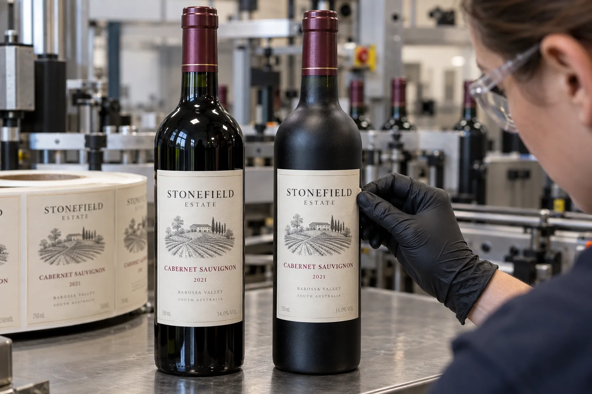

The adhesive touches a treated surface
When one wine-label roll sticks to last month's bottles but flags on a new delivery, I would not immediately condemn the roll. Wine glass can carry anti-scuff or slip treatments, and the effective surface can vary by bottle lot. The right comparison is the same printed construction applied to known good and suspect bottles under the same line conditions.
Avery Dennison's glass-substrate comparison reports meaningful differences among bottle glass, other container glass and a laboratory test panel, including effects of texture and coatings. That does not prove any particular coating caused a customer's failure; it shows why a generic glass datasheet is an incomplete diagnosis.
One label, two bottle deliveries
Imagine a composite winery that changes glass supplier while keeping artwork and paper stock. The new bottle looks nearly identical, but a label edge begins to lift after packing. I would separate samples by bottle lot, then note whether lift starts immediately, after a cold room, or after wet service. Timing points to different questions.
A composite contract bottler uses both glossy and satin-finish glass for different brands. It may be tempted to stock one premium label material for all of them. I would test both surfaces first. A heavier textured face and larger label can put more restoring force at the edge, so material simplification has a limit.
Run a controlled comparison
Use bottles from each delivery with the same fill, label roll, application pressure and dwell period. Photograph edges at the same intervals. Record bottle cleanliness and temperature. A face that lifts only after immersion deserves a different conversation from a face that never wets out during initial application.
| Evidence | Why it matters |
|---|---|
| Bottle lot and finish | Separates a surface change from a label change |
| Label roll and artwork | Controls face stiffness and printed finish |
| Application log | Captures moisture, temperature and pressure |
| Failure time | Distinguishes immediate lift from later handling |
Our buying view
Keep a good bottle on the bench
My first useful sample would be one bottle from the lot that worked. Without that control, every proposed change becomes a guess: adhesive, paper, bottle or line setup. A side-by-side trial can save more time than a hurried stronger-stock reorder.
Send the diagnostic set
- Good and failed filled bottles, separated by lot.
- Bottle supplier and any known finish or coating change.
- Exact printed label roll, dieline and material construction.
- Application temperature, moisture and wipe-down settings.
- Photos of edges immediately and after storage or wet service.
For the broader symptom tree, see why bottle labels peel off. For bottles with deliberate relief, read labels on embossed glass.
Frequently asked questions
Can a bottle coating affect label adhesion?
Yes. Surface coatings and texture can change adhesive contact. Compare the exact glass lots under the intended application process.
Does a stronger adhesive always solve lift?
No. Check bottle dryness, face stiffness, label size and wipe-down pressure alongside adhesive selection.
What evidence helps a supplier investigate?
Send good and failed bottles, bottle-lot details, printed-label roll details, application conditions and the time when lift appeared.
Related buyer guides
Review your label specification
Send package photos, label dimensions, material details, quantity and application conditions. Include good and failed samples where possible so the discussion starts with evidence.